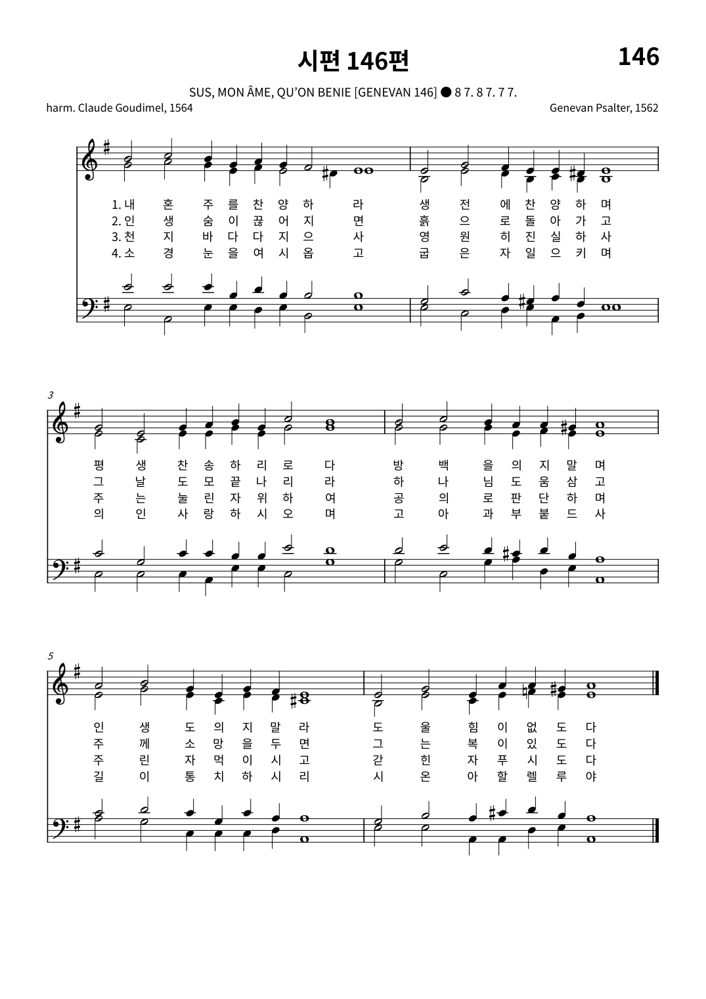

시편 146편
SUS, MON ÂME, QU’ON BENIE [GENEVAN 146] · 8 7. 8 7. 7 7.
곡조: Genevan Psalter, 1562 · 화성: Claude Goudimel, 1564 · 가사: 개역한글판 시편 146편 편역(AI 초벌 편역판 · 신학 감수 전) · 4절
악보 PDF MusicXML(출력용) MusicXML(반주용, 전주·반복 포함) 개역한글 시편 146편 읽기
악보

가사
1절
내 혼 주를 찬양하라
생전에 찬양하며
평생 찬송하리로다
방백을 의지 말며
인생도 의지 말라
도울 힘이 없도다
내 혼 주를 찬양하라
생전에 찬양하며
평생 찬송하리로다
방백을 의지 말며
인생도 의지 말라
도울 힘이 없도다
2절
인생 숨이 끊어지면
흙으로 돌아가고
그날 도모 끝나리라
하나님 도움 삼고
주께 소망을 두면
그는 복이 있도다
인생 숨이 끊어지면
흙으로 돌아가고
그날 도모 끝나리라
하나님 도움 삼고
주께 소망을 두면
그는 복이 있도다
3절
천지 바다 다 지으사
영원히 진실하사
주는 눌린 자 위하여
공의로 판단하며
주린 자 먹이시고
갇힌 자 푸시도다
천지 바다 다 지으사
영원히 진실하사
주는 눌린 자 위하여
공의로 판단하며
주린 자 먹이시고
갇힌 자 푸시도다
4절
소경 눈을 여시옵고
굽은 자 일으키며
의인 사랑하시오며
고아 과부 붙드사
길이 통치하시리
시온아 할렐루야
소경 눈을 여시옵고
굽은 자 일으키며
의인 사랑하시오며
고아 과부 붙드사
길이 통치하시리
시온아 할렐루야